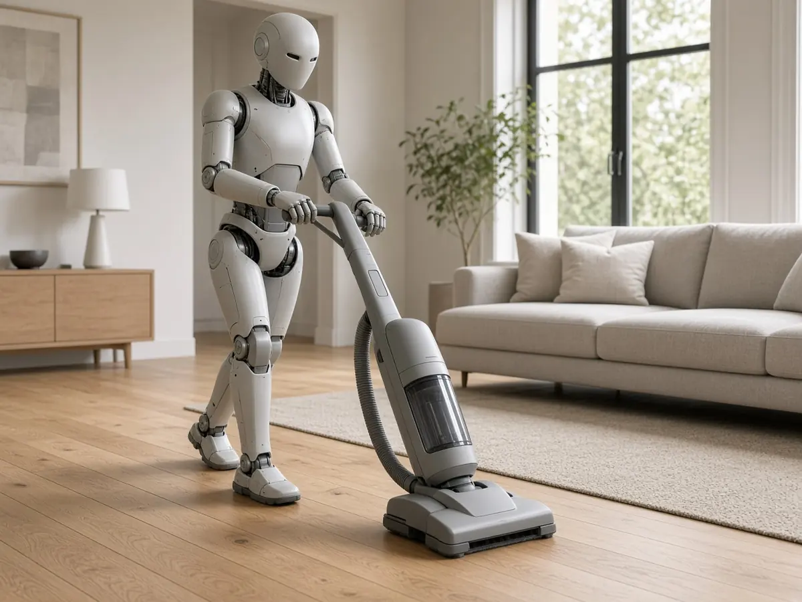

Deployments
Why Tau Robotics' humanoid home-cleaning subscription is trending
Short answer: On 29 October, Tau Robotics founder and CEO Alexander Koch posted on X that customers can now book the company's humanoid cleaners on a recurring subscription, for up to three hours per visit. The post, with a video Koch described as a first, uncut take shown at four times speed, had passed 670,000 views by the morning of 30 October, according to X's public post metrics.

Tau's website describes the robots doing dusting, wiping surfaces, cleaning toilets, vacuuming and mopping, and says the company usually sends two robots per cleaning. According to the same FAQ, the robots are not fully autonomous: they are operated by humans and AI, and a human supervisor decides when a robot works on its own and when to steer it directly.
The booking page says access is invite-only with a waitlist, that every clean is supervised by a remote human operator, and that bathrooms and bedrooms are off-limits by default unless the customer opts in. A repeating clean is billed per visit and can be cancelled at any time, according to the page.
On price, the San Francisco Chronicle reported in July 2026 that Tau launched at $30 an hour. The company's terms of service, last updated on 24 October 2026, list a standard fee of $50 per humanoid per hour and say the price shown at booking is the price the customer pays, so the amount charged may vary with discounts or offers.
According to the Chronicle, Tau was founded in 2024, had raised $2.6 million in pre-seed funding and aims to move the human operator over time toward safety supervision only, and eventually to remove the need for one. Koch told the paper that home cleaning is "a useful starting point for humanoids". For other at-home humanoid efforts, see our coverage of Reward AI's delivery demo and AiMOGA's family companion robot.
Sources
- Alexander Koch on X: recurring subscription for humanoid cleaners (29 Oct 2026)
- Tau Robotics: Humanoid Cleaning Service in San Francisco, FAQ (accessed 30 Oct 2026)
- Tau Robotics: Book a clean (accessed 30 Oct 2026)
- Tau Robotics Terms of Service (last updated 24 Oct 2026)
- S.F. tech company wants to send a robot to clean your house for $30 an hour (San Francisco Chronicle, 31 Jul 2026)
- X trending story: San Francisco startup offers robot home cleaning subscriptions (30 Oct 2026)